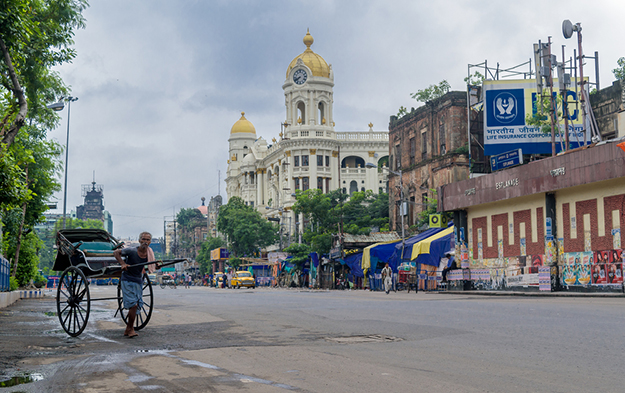
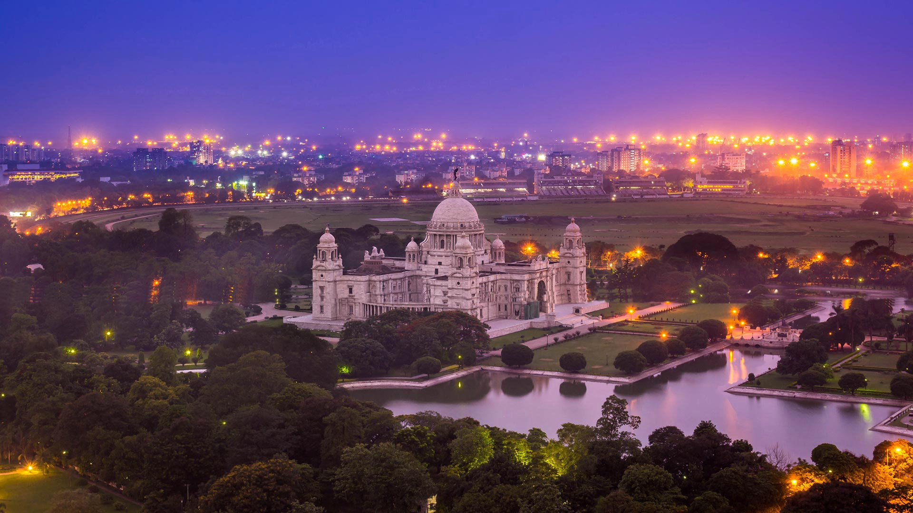
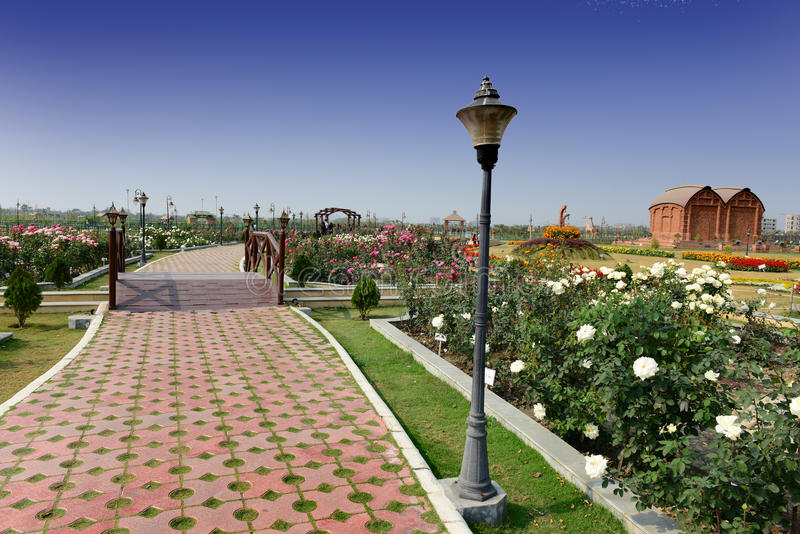

.gif)
CITY ATTRACTION
Role As A Commercial Hub
Kolkata is the main commercial and financial hub of East and North-East India and home to the Calcutta Stock
Exchange. It is a major commercial and military port, and is the only city in eastern India to have an
international airport. Once India's leading city, Kolkata experienced a steady economic decline in the decades
following India's independence due to steep population increases and a rise in militant trade-unionism, which included
frequent strikes that were backed by left-wing parties.From the 1960s to the late 1990s, several factories were
closed and businesses relocated.The lack of capital and resources added to the depressed state of the city's
economy and gave rise to an unwelcome sobriquet: the "dying city".The city's fortunes improved after the Indian
economy was liberalised in the 1990s and changes in economic policy were enacted by the West Bengal state government
. |
Some Facts About CityHistory of KolkataImportance as a Tourist Destination Role as a Commercial Hub of Eastern India Community Top 5 Visiting Destinations |
Photo Gallery   
 
.jpg) 
  |